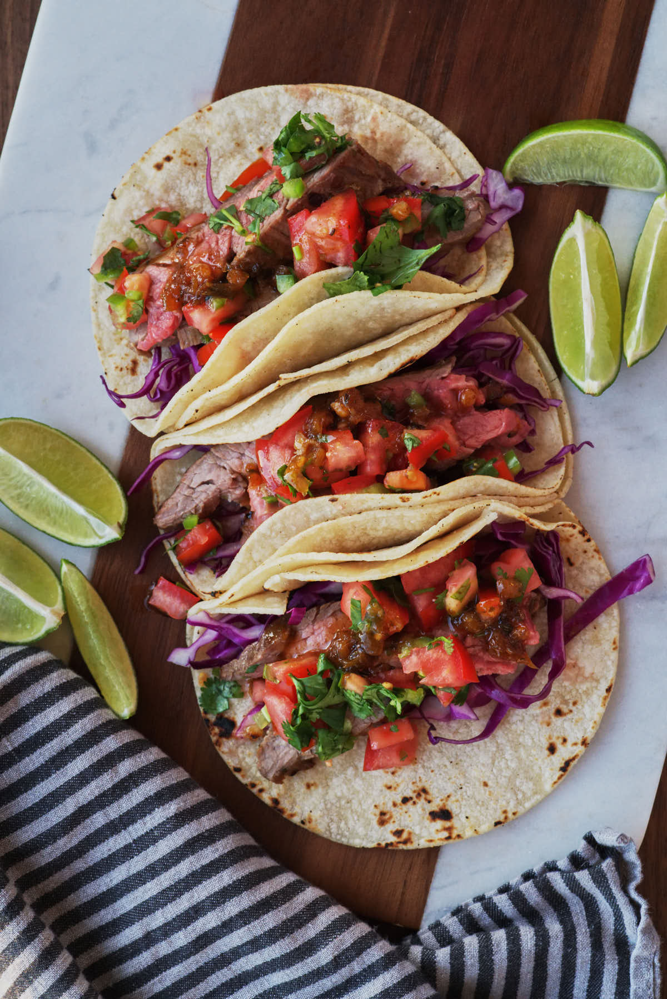

Steak Marinade

Get ready for some amazing steak tacos with this recipe...
it's got just the right amount of kick and sweetness in the incredible marinade.
Taco night just got an upgrade! Plus, I'm showing you how to grill them, pan fry them, AND broil them.
Ingredients
- 2 lb. skirt steak
- 1/4 cup lime juice
- 1/4 cup orange juice
- 1/4 cup soy sauce
- 3 Tbsp olive oil
- 1 cup chopped cilantro
- 7 garlic cloves, finely chopped
- 2 tsp chili powder
- 1 tsp cumin
- 1 tsp salt
Steps
- Put ingredients together in large bowl and mix thoroughly. Let marinade sit for 6 hours before cooking.
- On medium-high heat, cook meat for 3-5 minutes before removing from the heat.